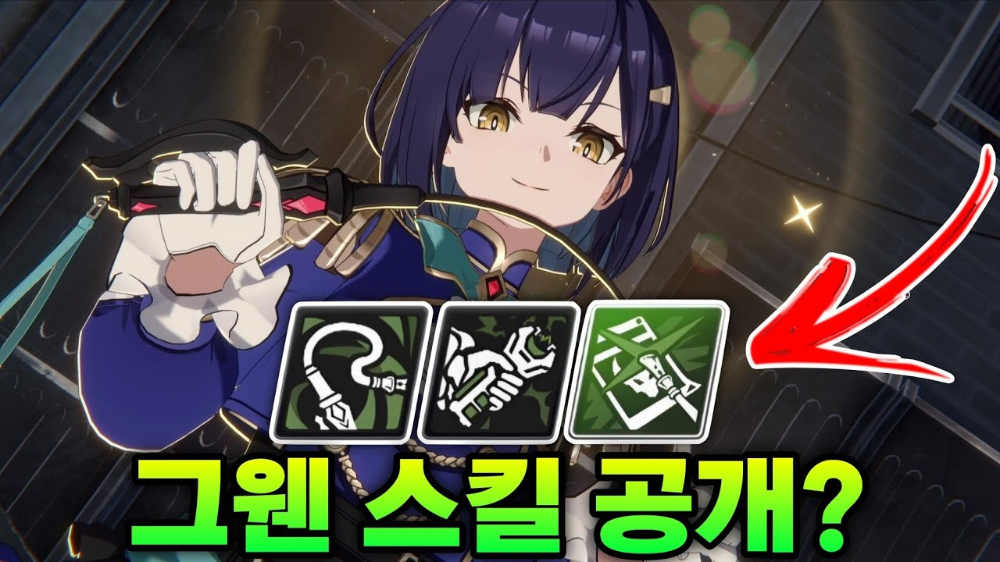

스타세이비어 그웬 스킬 운용법, 현장 대기와 전기 충격 정리 (영상 기준)
그웬은 혼자 때려서 이기는 캐릭터라기보다, 아군이 때릴 때 스택을 쌓아 두었다가 한꺼번에 터뜨리는 쪽에 가깝네요. 다만 이건 스킬 설명 문구만 보고 내린 인상이라, 기준부터 분명히 하고 가겠습니다.
이 글은 스킬 구조를 미리 훑어 두려는 초보·복귀 유저, 그리고 인게임 스킬 화면과 문구를 대조해 보려는 분을 위해 정리했습니다.
기준은 유튜브 채널 '블릿 Bullet'의 영상 「은신 있는 딜러?! 그웬 스킬 분석」입니다. 출시 전 이벤트 스토리에서 확인되는 스킬 설명을 진행자가 차례로 읽어 주는 내용이라, 아래 스킬 이름과 수치는 전부 영상에서 읽어준 기준 · 인게임 문구와 대조 전이라는 꼬리표가 달려 있다고 보고 읽어 주세요. 그웬 픽업은 커뮤니티 표기상 10월 초 기준 진행 중인 것으로 보이는데(공식 공지는 확인하지 못했습니다), 이미 만날 수 있다면 인게임 스킬 화면에서 바로 대조해 보시길 권합니다.

영상 썸네일 · 유튜브 블릿 Bullet, 그웬 일러스트 옆에 스킬 아이콘 세 개가 같이 걸려 있습니다.
이미지 출처: 영상 썸네일 · 유튜브 블릿 Bullet (은신 있는 딜러?! 그웬 스킬 분석)
1. 그웬은 누구고, 이 글은 무엇을 기준으로 하나
그웬은 2026년 9월 14일 업데이트로 들어온 이벤트 스토리 '회색빛 연구'의 주역이고, 탐정 '프로페서 M'의 조수입니다.
바스커빌 가문의 음모를 파헤치는 줄거리라는 점까지는 인벤·경향게임스·게임메카 보도가 서로 일치합니다. 같은 보도에서 프로페서 M은 협공을 발생시키는 조력형 딜러, 픽업 기간은 2주로 소개됐고, 그웬은 게임메카 기준 '향후 순차적인 픽업을 통해 등장할 예정'이라고 나와 있었습니다. 별속성 스트라이커라는 소개는 영상 발언으로만 적어 두고, 희귀도는 어디서도 확인하지 못했습니다.
2. 패시브 구조, 현장 대기와 전기 충격이 뼈대
영상 낭독 기준으로 그웬 패시브의 뼈대는 아군이 때릴 때 '전기 충격'이 쌓이고, 5중첩 이상이 되면 특수기가 알아서 추가로 나가는 구조입니다.
동전을 아군이 넣어 주는 저금통을 떠올리시면 쉬운데요, 저금통이 어느 정도 차면 그웬이 대신 한 번 터뜨린다고 보시면 됩니다. 문구를 나누면 이렇습니다. 공격력은 15% 증가하고, 최초 전투 시작 시 자신에게 1턴간 '현장 대기'가 붙습니다. 현장 대기는 다른 아군이 남아 있으면 공격 대상으로 선택되지 않는 상태이고, 은신과 관련된 효과의 영향은 받지만 피격으로 풀리지 않으며 은신의 선제 방어 무시 효과는 적용되지 않습니다.
- '전기 충격'(해제 불가)은 현장 대기 중인 그웬 대신 아군이 적을 타격하면 1회, 아군이 특수기로 타격하면 추가 1회 쌓이고 최대 10중첩입니다.
- 아군 타격 뒤 전기 충격이 5회 이상이면 '진실을 밝히는 빛'(특수기)이 자동 발동하고 전기 충격이 5 감소하며, 추가 발동은 그웬이 가장 최근에 타격한 적을 우선 공격합니다.
- 현장 대기 상태가 아닐 때는 그웬을 뺀 아군이나 적의 턴이 시작될 때마다 도약 스택에 비례해 행동 게이지가 스택당 4% 오릅니다.
패시브 문구가 가장 길어서 화면을 스크롤해 두 장으로 나눠 찍어도 괜찮습니다.
3. 기본기·특수기·궁극기 표로 보기
기본기는 도약 스택을 쌓고, 특수기는 쿨타임 3턴, 궁극기는 쿨타임 4턴이며 궁극기를 쓰면 특수기가 곧바로 이어서 나갑니다.
표의 값은 영상에서 읽어준 문구를 옮긴 것이고, 기본기와 궁극기의 이름, 기본기의 쿨타임은 영상에서 따로 읽어 주지 않았습니다.
| 구분 | 쿨타임 | 영상에서 읽어준 효과 |
|---|---|---|
| 패시브 | 상시 | 공격력 +15% · 전투 시작 시 현장 대기 1턴 · 아군 타격마다 전기 충격 쌓임(최대 10) · 5중첩 이상이면 특수기 발동, 5 감소 · 도약 스택당 행동 게이지 +4% |
| 기본기 | 영상 언급 없음 | 채찍으로 진실을 숨기는 적 공격 · 도약 스택 +1 |
| 특수기 '진실을 밝히는 빛' | 3턴 | 용의자로 특정된 적 공격 · 행동 게이지 +10% · 추가 발동이면 피해 +10% · 노바 버스트 효과는 강인도 고정 피해 +1, 전기 충격 +2 |
| 궁극기 | 4턴 | 가장 유력한 용의자 타격 · 전기 충격 +2 · 타격 후 현장 대기 3턴 · 특수기 발동 |
확인 위치: 인게임 캐릭터 상세 > 스킬 화면 · 공식 공지 · 확인되면 위 표를 실제 값으로 교체해 주세요.
쿨타임 숫자가 같이 찍히도록 특수기와 궁극기 탭은 따로 한 장씩 찍는 쪽이 보기 편합니다.
4. 운용 순서, 영상 문구 정리와 글쓴이 정리
이 절은 영상에서 읽어준 문구를 글쓴이가 순서대로 엮은 정리입니다. 영상이 이 순서를 권했다는 뜻은 아니고, 궁극기를 첫 턴에 쓸 수 있는지도 영상에서 확인하지 못했습니다. 큰 흐름은 궁극기로 특수기 연계를 열고, 이후 아군 타격으로 전기 충격을 모아 추가 특수기를 터뜨리는 쪽으로 읽힙니다.
- 궁극기(영상 내용): 전기 충격이 2 쌓이고 현장 대기가 3턴 붙으며, 곧바로 특수기가 연계로 나갑니다.
- 특수기(영상 내용): 쿨타임은 3턴이고, 쓸 때마다 행동 게이지가 10% 오릅니다.
- 아군 타격(영상 내용): 현장 대기가 유지되는 동안 아군이 때릴 때마다 전기 충격이 쌓입니다. 특수기로 때리면 한 번 더 쌓입니다.
- 5중첩 이상(영상 내용): 아군 타격 직후 특수기가 한 번 더 나가고 스택이 5 줄어듭니다. 추가 발동이라 피해 10% 증가도 붙습니다.
- 도약 스택(글쓴이 정리): 현장 대기가 풀린 뒤에는 기본기로 도약 스택을 쌓아 두는 쪽이 문구상 이득으로 읽힙니다. 턴이 시작될 때마다 스택에 비례해 행동 게이지가 차오르기 때문입니다.
여기서 놓치기 쉬운 함정이 하나 있는데요, 아군 타격으로 쌓이는 전기 충격은 문구상 현장 대기 중일 때만 쌓이고 도약 게이지는 현장 대기가 아닐 때만 차오릅니다. 궁극기나 노바 버스트처럼 그웬이 직접 쌓는 전기 충격은 이 조건이 붙지 않는 것으로 읽혔습니다. 두 효과가 번갈아 도는 구조로 보이니, 현장 대기가 끊긴 턴에 아군 타격 스택이 안 쌓여도 당황하지 마세요. 궁극기가 쿨타임 4턴에 현장 대기 3턴이라 숫자만 보면 한 턴 틈이 생기는데, 쿨타임이 어떻게 계산되는지는 확인하지 못해 실제로 공백이 있는지는 모릅니다(ㅋㅋ).
5. 영상에서는 이렇게 평가했습니다
여기부터는 사실이 아니라 영상 진행자의 의견이라 따로 모아 두었습니다.
- 영상에서는 현장 대기를 은신과 비슷하지만 선제 방어 무시가 없고 맞아도 풀리지 않는 생존기라고 평가했습니다.
- 프로페서 M과 함께 쓰면 시너지가 날 것 같다고 합니다.
- 페이를 전열에 세우는 메타에서 지금까지 키라가 맡던 자리에 그웬이 들어가면 좋겠다고, 심지어 키라의 상위호환이라고까지 평가했습니다.
- PVP에서는 현장 대기 중인 그웬을 상대가 광역기 없이는 노리기 어렵다고도 짚었습니다.
- 스킬이 복잡하지만 전반적으로 잘 나왔다는 평입니다.
페이와 키라가 지금 어떤 메타인지는 저도 확인하지 못했으니, 이 부분은 영상 속 의견으로만 참고해 주세요.
참고한 곳
· 유튜브 블릿 Bullet, 은신 있는 딜러?! 그웬 스킬 분석 (2026.10.03 기준)
· 인벤, 스타세이비어 이벤트 스토리 '회색빛 연구' 업데이트 기사
· 경향게임스, '회색빛 연구' 업데이트 기사
· 게임메카, '회색빛 연구' 업데이트 기사
▶ 같이 보면 좋은 글
· 그웬 같은 신규 영웅을 뽑을지 고민될 때 : 스타세이비어 시작 및 리세 유저를 위한 SSR 선택권 영웅 티어표, 바니걸 포함
· 스타세이비어 초기 소식이 궁금할 때 : 모바일게임 스타세이비어 출시일 콜라보 카페 정보